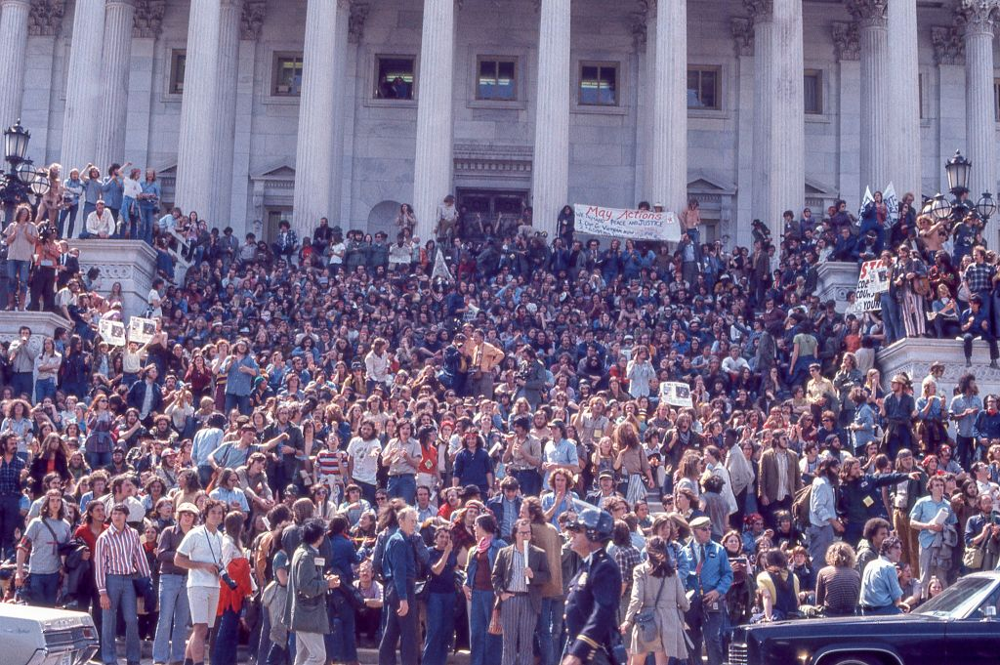

Cold War America and the Culture of Secrecy
To understand how Nixon could justify bugging political opponents and directing the CIA to obstruct an FBI investigation, you have to understand the world he was operating in. Since Truman, presidents had made war, run covert operations, and expanded their authority without telling Congress, because fighting communism seemed to override the normal rules. By the time Nixon took office in 1969, the executive branch had a deep institutional habit of doing things in secret.
Nixon's team believed antiwar protesters and leaking journalists were genuine national security threats, not just political opponents. That mindset made illegal tactics feel justified. The White House "Plumbers" unit, created in 1971 to stop leaks, was a direct product of this thinking. The Plumbers eventually organized the Watergate burglars.

Nixon and Brezhnev at the Moscow Summit, May 1972
Credit: Nixon Presidential Library, National Archives
"We have a cancer within, close to the presidency, and it is growing daily."John Dean to President Nixon, March 21, 1973. White House tape transcript, National Archives
The War That Broke Public Trust

Vietnam War protests in Washington D.C., 1971
Credit: Library of Congress, Prints and Photographs Division
Vietnam is the most important piece of context for Watergate. By 1969, more than 36,000 Americans had died and public opinion had already turned against the war. Nixon responded to antiwar dissent with surveillance. The "Huston Plan" of 1970 authorized illegal wiretapping, mail opening, and break-ins against domestic dissidents.
When Daniel Ellsberg leaked the Pentagon Papers in June 1971, showing how the government had misled the public about Vietnam, Nixon created the Plumbers to prevent future leaks. The same unit would plan the Watergate break-in a year later. The line from Vietnam to Watergate is direct. Vietnam had also already destroyed a generation's trust in government before Watergate even happened.
Nixon: A Political Survivor Who Never Stopped Feeling Threatened
Nixon's entire political career was built on coming back from the brink. He nearly lost the vice presidency in 1952 (saved by his "Checkers" speech), lost the 1960 presidential race by a razor-thin margin, and lost the 1962 California governor's race. Then he came back and won the White House in 1968. That pattern shaped how he saw everything: as a fight he could easily lose.
He kept an actual enemies list of journalists and politicians he wanted harassed through IRS audits. He was deeply paranoid. That paranoia made the Watergate cover-up feel necessary to him even when it clearly was not. The cover-up, not the break-in, is what ended his presidency, and it was entirely self-inflicted.
Nixon's Political Timeline
- 1946: Elected to Congress
- 1948: Pursues Alger Hiss case, gains national recognition
- 1952: Eisenhower's VP; survives fund scandal with Checkers speech
- 1960: Loses presidency to Kennedy by 0.17% of the popular vote
- 1962: Loses California governor's race
- 1968: Returns and wins the White House
- 1972: Wins 49-state landslide re-election
- 1974: Resigns August 9, the only president ever to do so
The Imperial Presidency and the Unnecessary Crimes
Historian Arthur Schlesinger Jr. coined the term "imperial presidency" in his 1973 book of the same name. His argument was that Cold War presidents had been quietly accumulating power that the Constitution assigned to Congress, especially the power to make war. Nixon took all of this and pushed it to its extreme: impounding funds Congress had appropriated, secretly bombing Cambodia without informing Congress, and claiming executive privilege over virtually everything. When Watergate created a legal threat, he turned the entire executive branch toward the cover-up.
On November 7, 1972, Nixon won re-election by one of the largest margins in American history, 49 of 50 states, 520 electoral votes, 60.7% of the popular vote. His genuine achievements in foreign policy were real. He was going to win easily. But his paranoia would not let him trust that, and so CREEP ran a massive sabotage campaign that was completely unnecessary. The crimes that destroyed his presidency were self-inflicted.